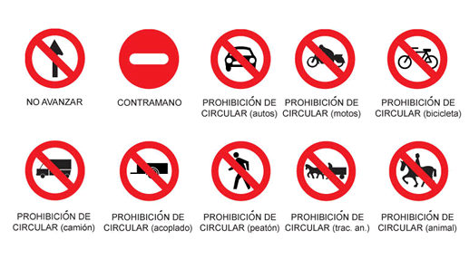
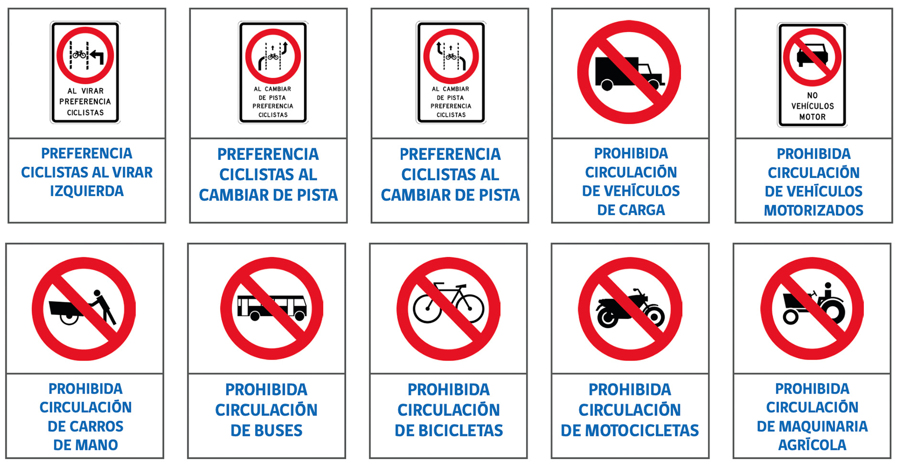

Señales Reglamentarias (Prescriptivas)
Indican las obligaciones, restricciones o prohibiciones en la vía. Si no las cumples, te comes una multa.
Señales de Prohibición
Cortan de una vez cualquier maniobra peligrosa o el paso de ciertos vehículos.
- No Avanzar / PARE: Parada obligatoria sí o sí.
- Giros Prohibidos: Nada de doblar en U, a la izquierda o derecha donde indique.
- Adelantamiento: Prohibido pasar al vehículo de adelante.
- Límites físicos: Restricciones estrictas de peso y altura.

Restricciones de Circulación
Ponen límites operativos para mantener el orden en la calle o ruta.
- Velocidades: Respetar la máxima y mínima permitida.
- Tránsito Pesado: Los camiones van por la derecha.
- Cadenas: Obligatorias con hielo o nieve.
- Estacionamiento: Lugares donde está prohibido frenar o dejar el auto.

Obligaciones y Prioridades
Lo que el conductor está obligado a hacer para evitar choques.
- Sentido Obligatorio: Única dirección habilitada para avanzar.
- Ceda el Paso: Dar prioridad al que viene por la otra vía.
- Carril Exclusivo: Espacios únicos para bicis o colectivos.